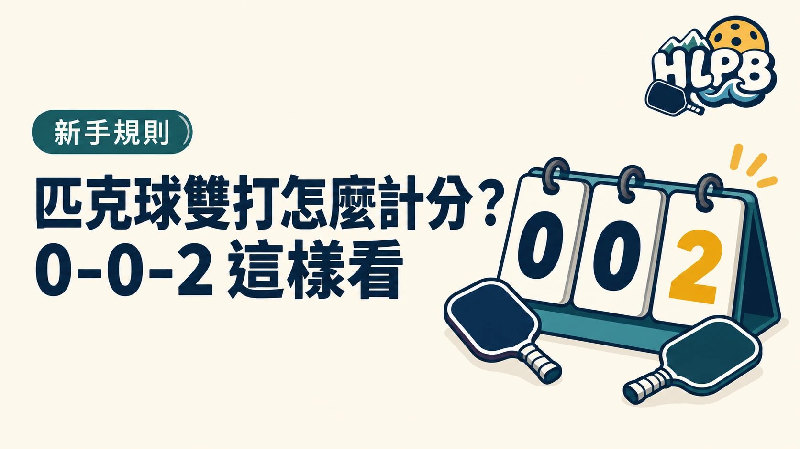

為什麼要喊三個數字？
發球得分制的雙打，依序喊「發球方分數－接發方分數－第幾位發球員」。例如 4-3-1，代表發球方 4 分、接發方 3 分，現在是該隊第 1 位發球員。
0-0-2 是什麼？
每局開始會喊 0-0-2。開局的發球隊只由一位球員發球，失誤後便換對手發球。之後每次換得發球權，雙打隊伍通常有兩位球員依序發球。
傳統計分只在發球方贏得回合時得分。另有每球得分制，實際採哪種方式，請看活動或賽事規定。想練習規則，可先看第一次打球指南與揪打球入口。
資料參考：USA Pickleball 規則摘要。實際活動及賽事以其規定為準。
跟著影片看觀念
協會網站選用的中文計分教材。本文使用發球得分制名稱，細節以現行規則為準。
最後查證：2026-09-28｜資料來源：USA Pickleball 規則摘要
返回文章列表